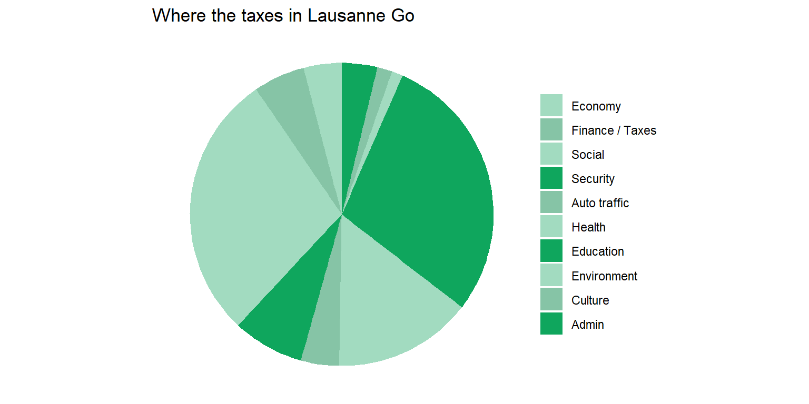

library(tibble)
library(ggplot2)
library(dplyr)
library(forcats)
library(waffle)
library(tidyr)
library(RColorBrewer)
df_pie <- tibble(
category = c(
"Admin",
"Culture",
"Environment",
"Education",
"Health",
"Auto traffic",
"Security",
"Social",
"Finance / Taxes",
"Economy"),
chf = c(
3.77,
1.60,
1.19,
28.92,
14.78,
4.09,
7.60,
28.50,
5.47,
4.08),
`2018` = c( # this column was added later and will be used for pivoting
4.04,
1.65,
1.16,
28.50,
12.85,
3.58,
7.12,
27.87,
8.43,
4.80),
`2017` = c( # this column was added later and will be used for pivoting
4.27,
1.98,
0.95,
28.97,
15.26,
4.47,
7.49,
27.55,
4.80,
4.26),
fill = c(
"#a2dbc0",
"#86c4a6",
"#a2dbc0",
"#0fa65d",
"#86c4a6",
"#a2dbc0",
"#0fa65d",
"#a2dbc0",
"#86c4a6",
"#0fa65d")
) %>% mutate(
category = category %>% fct_inorder() %>% fct_rev()
)
pie_chart <- df_pie %>%
ggplot(aes(x = "", y = chf, fill = category)) +
geom_bar(stat = "identity", width = 1) +
coord_polar("y", start = 0) +
theme_void() +
scale_fill_manual(values = df_pie$fill) +
theme(legend.title = element_blank()) +
labs(title = "Where the taxes in Lausanne Go")
pie_chart